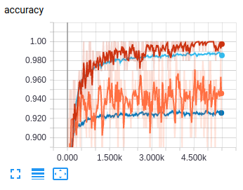
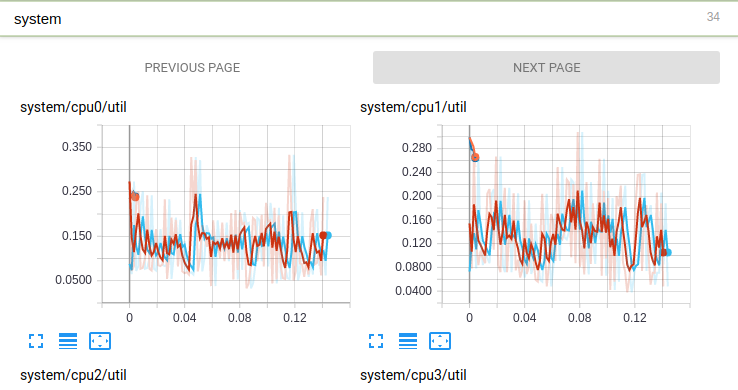
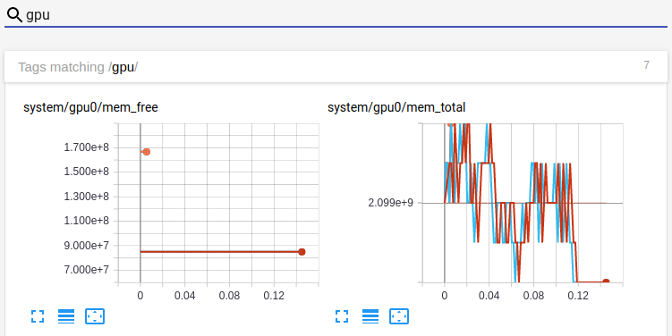

Go deeper with Guild AI
- Requirements
- Find the MNIST package
- Install mnist
- Train the softmax model
- Examine your training run
- Visualize your run
- Train the CNN model
- View training metrics using TensorBoard
- Compare models
- Summary
- Next steps
In this tutorial we’ll train two models with MNIST data. Training models with Guild AI
is a simple process of finding a model, installing it, and running
the train command.
Requirements
This tutorial assumes the following:
- Guild AI is installed and verified
- Your virtual environment is activated (if applicable)
- You have a working Internet connection
While not required, we recommend using a dedicated virtual environment for this tutorial. To setup your environment, see Tutorial virtual environments.
Find the MNIST package
Start by searching for MNIST models. From a command line, run:
guild search mnist
You should see a list of packages that includes
mnist. The mnist package is a sample that contains models that
train quickly. We’ll use it for this tutorial.
Install mnist
Install the mnist package by running:
guild install mnist
This command downloads and installs mnist on your system.
When the install has completed, list the installed packages:
guild packages
A package provides models. You can list the installed models by running:
guild models
The list contains two models associated with the mnist package:
mnist/mnist-cnn CNN classifier for MNIST
mnist/mnist-softmax Softmax regression classifier for MNIST
Models are displayed with their associated packages as
PACKAGE/MODEL.
Each model provides operations, which, when run, perform actions associated with the model.
List available operations by running:
guild operations
Note
You can run guild ops as a shortcut guild operations.
The two models each provide a train operation:
mnist/mnist-cnn:train Train the CNN
mnist/mnist-softmax:train Train the softmax regression
Operations are displayed with their associated models as
PACKAGE/MODEL:OPERATION.
For background on these topics, see:
Train the softmax model
In a console, run:
guild train mnist-softmax
Guild displays information about the run and asks you to confirm the operation. The model defines two flags:
batch-size |
number of images to use per batch |
epochs |
number of epochs to train |
Press ENTER to accept the default values and continue.
The operation first resolves any resources required by the model by
downloading them. It then runs a TensorFlow script to train the
mnist-softmax model.
As the model trains, let’s note a few things:
-
The model requires the MNIST dataset, which is automatically downloaded and saved by Guild as a resource. This resource remains available for future training operations.
-
Guild starts and supervises a TensorFlow script, which is provided by the
mnistpackage. Scripts are standard Python applications that require little to no modification for use in Guild. -
Guild creates a unique run directory that is associated with the training operation. This directory contains the output generated by the script.
You’ll learn more in the steps that follow!
Once the dataset files are downloaded, the model trains in a few seconds on most systems.
Congratulations, you’ve trained your first Guild model!
Examine your training run
Guild operations generate runs, which are artifacts that are available for inspection during and after the operation. You can list runs as follows:
guild runs
This displays the training run for the mnist-softmax model. You can
see when the operation was started and its status.
To get more information for a run:
guild runs info
This displays detailed information for the latest run.
Guild operations typically generate files, which are located in the
run directory. You can list the files by including the --files
option:
guild runs info --files
For more information on listing runs and getting run info, see runs info.
Visualize your run
Guild provides two visualization tools:
Guild View is useful for browsing run details and viewing generating artifacts. TensorBoard is a tool created by the TensorFlow team for visualizing training event logs.
Guild View
Let’s start with Guild View. In a separate console, run:
guild view
Guild View starts and opens a browser window:

mnist-softmax modelLet’s take a moment to explore the run.
-
The list on the left shows the available runs. Type something into Filter to narrow the list.
-
The OVERVIEW tab contains general information about the run.
-
The FILES tab contains the list of files in the run directory.
-
The
 button in the upper left is used to view the runs in
TensorBoard. We’ll use this in the next section.
button in the upper left is used to view the runs in
TensorBoard. We’ll use this in the next section.
TensorBoard
TensorBoard is integrated into Guild in two ways:
- Link from Guild View
- Standalone tensorboard command
Since we have have Guild View running, let’s use the integrated link to open TensorBoard.
In the upper left of Guild View, click
This opens TensorBoard in a separate browser window that displays the
TensorFlow event logs for the mnist-softmax run.
Keep Guild View and TensorBoard open running in your browser throughout this tutorials — they both refresh automatically as you work!
Train the CNN model
As we saw earlier, the mnist package contains two models:
mnist-softmax and mnist-cnn.
We’ll now train the mnist-cnn model:
guild train mnist-cnn
You’ll again be prompted with the default flag values. Press ENTER
to accept the defaults and begin training.
As the model trains, let’s note a few things:
-
The
mnist-cnnmodel uses the same MNIST dataset for training used bymnist-softmax. Because the dataset was downloaded earlier and saved as a resource, it’s available immediately for training by this operation. -
This model is considerably more time consuming to train than the softmax model. If your system has a GPU and TensorFlow is configured to use it, you should notice your fans spinning up!
View training metrics using TensorBoard
While the model is training, switch to TensorBoard in your browser. On
the SCALARS tab, note the accuracy graph. This shows the
accuracy of the both the mnist-softmax and mnist-cnn training.

Expand the graph by clicking the fullscreen button
Additionally, in the top left of the window, uncheck Ignore outliers in chart scaling. This improves the chart view.
Note the differences in accuracy between the two models. The CNN model has a significantly higher accuracy but takes longer to train!
Tip
You can compare relative training times between runs by clicking
RELATIVE on the left in TensorBoard. Notice how much longer the
mnist-cnn model takes to train, even with a GPU!
In TensorBoard on the SCALARS tab, you’ll fine a section named system. Click system to expand the section. This information contains system metrics for CPU, GPU, memory, and I/O. Guild collects and logs this information as the model is trained.

The SCALARS tab contains a lot of information! You can filter the
results using the Filter tags field at the top. For example, to
view GPU metrics, type gpu:

Take some time and explore the information available in TensorBoard:
-
IMAGES contains samples of images used for training and validation.
-
GRAPHS displays a visual representation of the TensorFlow computation graphs for each model.
-
DISTRIBUTIONS and HISTOGRAMS show model variable statistics that can be used to debug training issues.
TensorBoard supports other visualizations (e.g. text and audio) which are activate for other models.
For more information, see TensorBoard.
Compare models
When the mnist-cnn has finished training, run the following:
guild compare
This opens a live table that you can use to compare runs. Note the accuracy of the two models.
The compare command is useful for quickly comparing runs.
Finally, let’s export the comparison to a CSV file.
Type q to exit the compare program and then run the following
command:
guild compare --csv > mnist-compare.csv
Guild automatically keeps track of all your training experiments. As you’ve seen, you have quick access to run details from a variety of tools:
- Use Guild View to browse run results
- Use TensorBoard to visualize event logs
- Use
compareto compare and export results
Summary
In this tutorial we installed and trained two MNIST models. Below is a summary of our workflow and associated commands.
| Find an MNIST model | guild search mnist |
| Install models | guild install mnist |
| Train models | guild train mnist-cnn |
| Visualize training runs, including TensorBoard integration | guild view |
| Compare runs | guild compare |
Next steps
There’s a lot more in Guild to explore! Consider these next steps: